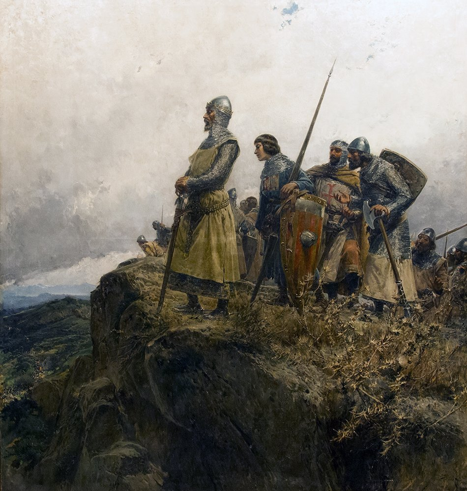

<ion-header>
  <ion-toolbar>
    <ion-buttons slot="start">
      <ion-menu-button></ion-menu-button>
    </ion-buttons>
    
    <ion-title>Illes Formigues</ion-title>
  </ion-toolbar>
</ion-header>

<ion-content>
  <a routerLink="/illes-formigues/a001-sicilia" routerDirection="forward" title="Pasar pàgina">
    
  </a>
</ion-content>